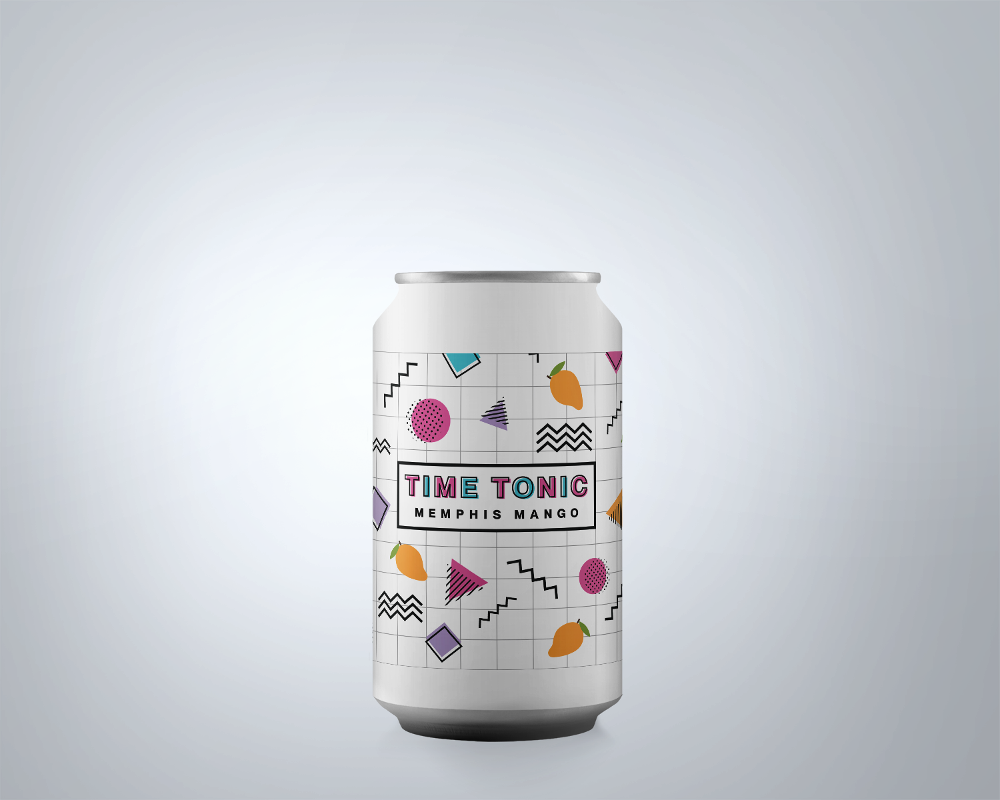
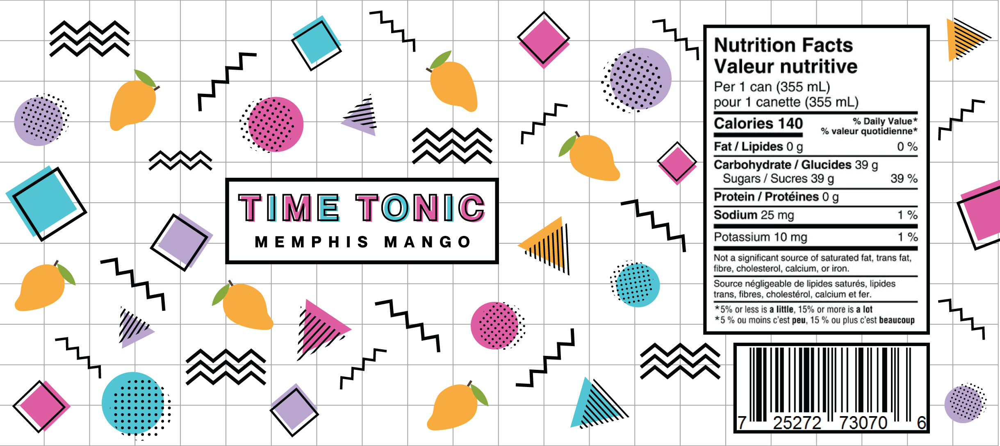

Time Tonic
 1980s - Memphis Style
Emerging as a subgenre of Postmodern design in the early 1980s, Memphis style dismissed the characteristics that were considered objectively good, and instead displayed fun, energetic features. Memphis style combined elements of several previous movements, including the geometric shapes of 1920s Art Deco and vibrant colour palettes of 1960s Pop Art. The style is associated with the Memphis Group founded by Italian designer Ettore Sottsass.
Memphis style incorporates organic patterns of exaggerated geometric shapes in vivid colour combinations. As with other Postmodern styles, Memphis style is decorative and is not concerned with the function of the design. The existence of the form itself becomes the function.